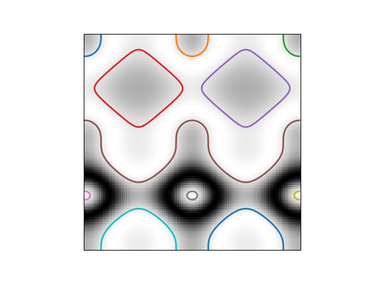

Source
SourceNote
Click here to download the full example code or to run this example in your browser via Binder
Contour finding¶
We use a marching squares method to find constant valued contours in an image.
In skimage.measure.find_contours, array values are linearly interpolated
to provide better precision of the output contours. Contours which intersect
the image edge are open; all others are closed.
The marching squares algorithm is a special case of the marching cubes algorithm (Lorensen, William and Harvey E. Cline. Marching Cubes: A High Resolution 3D Surface Construction Algorithm. Computer Graphics SIGGRAPH 87 Proceedings) 21(4) July 1987, p. 163-170).
import numpy as np
import matplotlib.pyplot as plt
from skimage import measure
# Construct some test data
x, y = np.ogrid[-np.pi:np.pi:100j, -np.pi:np.pi:100j]
r = np.sin(np.exp((np.sin(x)**3 + np.cos(y)**2)))
# Find contours at a constant value of 0.8
contours = measure.find_contours(r, 0.8)
# Display the image and plot all contours found
fig, ax = plt.subplots()
ax.imshow(r, cmap=plt.cm.gray)
for contour in contours:
ax.plot(contour[:, 1], contour[:, 0], linewidth=2)
ax.axis('image')
ax.set_xticks([])
ax.set_yticks([])
plt.show()
Total running time of the script: ( 0 minutes 0.080 seconds)